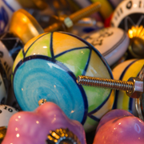

岡崎ぎゃざについて 「廃材」は単なる「ごみ」ではありません。創造力を刺激する「素材」のひとつである廃材は、私たちに何かをつくりたくなる意欲をもたらします。岡崎ぎゃざは「ギャザー」の寄せ集める・集約するという意味をもち、廃材を通して人とまちをつなげます。そんなたのしく廃材をいじくりまわす場所が、この夏、愛知県岡崎市に誕生します。 素材の販売 廃材をアート・デザイン・クラフトの素材へ加工し、 販売します。オンラインショップや移動販売も。 ワークショップ 「つくる遊び場」。現役のアーティストやデザイナーとともに、 素材のおもしろさを探ってみませんか? 企画コンサルティング ワークショップの企画、おまかせください。 廃材をつかった造形講座からプログラミングまで。
廃材のおもしろさ みなさんは子供のころ、きれいな石やお菓子の箱、赤い羽根などを集めていたことはありませんか? 捨てられる「モノ」、使われなくなった「モノ」・・・ これらの廃材は価値ある「素材」として生まれ変わることができます。 廃材を色や種類ごとに分けていくと、急にキラキラ輝きだして私たちに創造する力を与えてくれます。 同じものがひとつもない廃材の使い方は自由自在! 無限の可能性を秘めた素材なのです。 